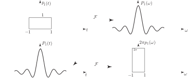
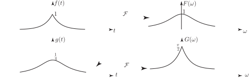
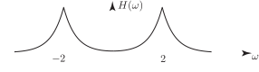
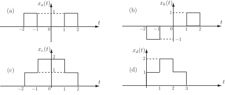

4 Further properties of the Fourier transform
We state these properties without proof. As usual denotes the Fourier transform of .
-
Time differentiation property:
(Differentiating a function is said to amplify the higher frequency components because of the additional multiplying factor .)
-
Frequency differentiation property:
Note the symmetry between properties 1. and 2.
-
Duality property:
If then
Informally, the duality property states that we can, apart from the factor, interchange the time and frequency domains provided we put rather than in the second term, this corresponding to a reflection in the vertical axis. If is even this latter is irrelevant.
For example, we know that if
Then, by the duality property, since is even,
Graphically:
Figure 6

Task!
Recalling the Fourier transform pair
obtain the Fourier transforms of
-
Use the linearity and duality properties:
We have

-
Use the modulation property based on the frequency shift property:
We have
so with

Exercises
-
Using the superposition and time delay theorems and the known result for the transform of the rectangular pulse
, obtain the Fourier transforms of each of the signals shown.

-
Obtain the Fourier transform of the signal
where denotes the unit step function.
-
Use the time-shift property to obtain the Fourier transform of
Verify your result using the definition of the Fourier transform.
-
Find the inverse Fourier transforms of
- If is a signal with transform obtain the Fourier transform of
-
- (using the superposition property)
-